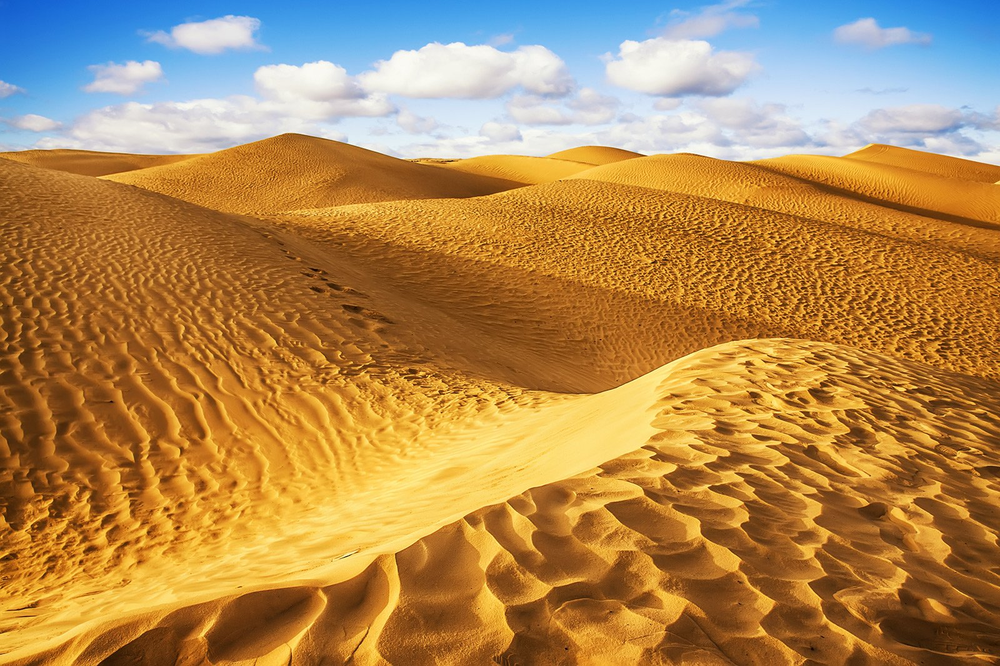

Пустыня — природная зона, характеризующаяся преимущественно или полностью равнинной поверхностью, разреженностью или отсутствием флоры и специфической фауной.

Пустыня Сахара
Самые большие пустыни:
- Сахара
- Пустыни Аравийского полуострова
- Гоби
Другое: